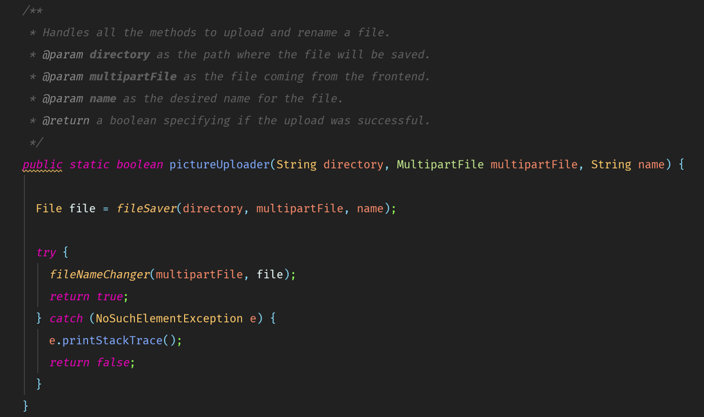
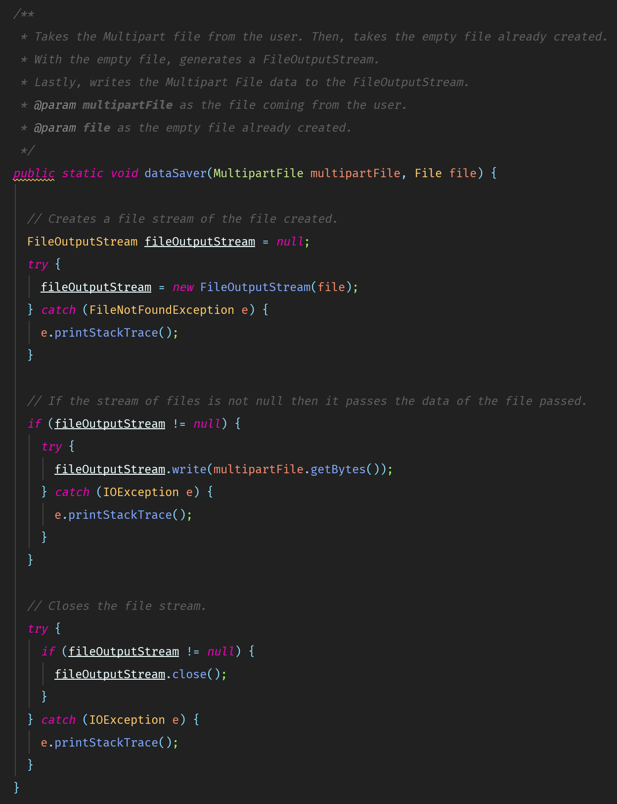
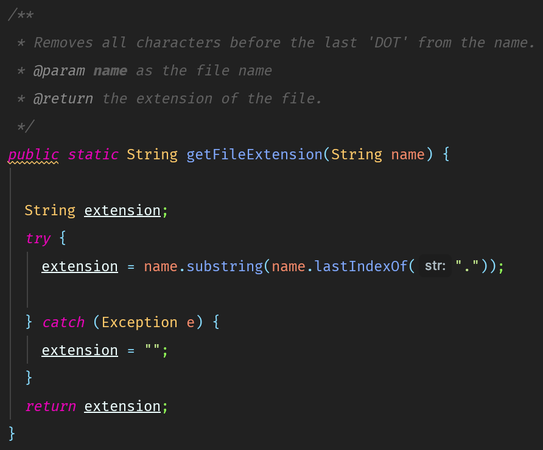
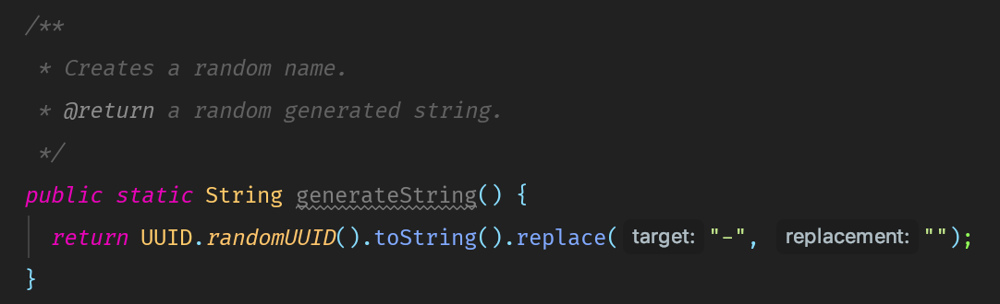

Aren’t you tired of dealing with files and streams when you need to upload Multipart File??? Because I am exhausted of it 😡. Let me introduce a solution to this problem. Yaayyy 😃
I developed this idea because I was searching for a way to change the name of a Multipart File in Java. Sadly, there was not much information about the topic. However, I was thinking of a way to solve this problem and the idea of creating a util class came up.
With this class, you can upload, change the name of the file, and as a bonus you can generate a random name for the file in your Java application.
This method takes care of calling the other methods in the class to upload the file. It takes a directory as a string, a MultipartFile, and a name as a string. Then, this method calls another method called fileSaver() that requires the directory, MultipartFile, and the name. FileSaver() returns the saved file. Also, This same method calls another method called fileNameChanger() (I am not good at naming methods and variables 😆) which requires the MultipartFile and the File returned by the method fileSaver(). The method only returns True if the file is renamed. Otherwise, it returns False.
There is a method that is extremely important in this whole process, without it this could not be possible whatsoever. That method is called:
As you can see, This method all it does is get the extension file of the MultipartFile. You may ask, why is this?. There is a simple answer for that, you need the extension of the MultipartFile before you can create a new file. This is because all we are doing here is creating an empty File with the same extension as the MultipartFile provided in the method pictureUploader().
After you create the empty file with the corresponding extension, you have to pass the data from the MultipartFile to the new Empty File.
This does the same thing as the method above, but with the condition that this time it uses a regex to perform the action.
Why would I do that?
Simply because programming is fun 😆.
Lastly, there is a method that I called “The bonus method”. This method all it does is generating a random string which you can use as the name of the file that you want to upload.
Check the GitHub repo here.